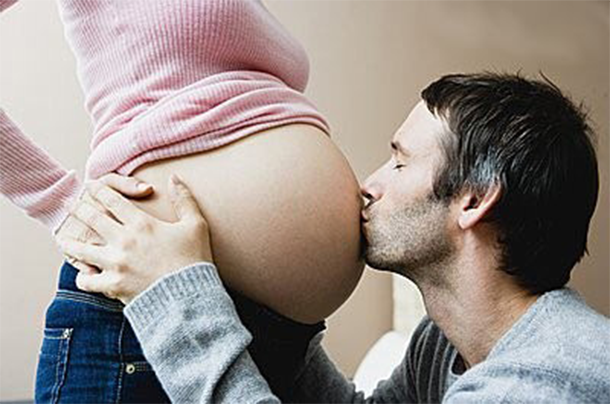

详情
孕期补钙全攻略，告诉你吃那些食物更补钙！

钙是胎宝宝发育过程中的重要营养要素，骨骼、胎盘的形成过程中也需要大量的钙。钙是胎宝宝发育过程中的重要营养要素，形成过程中也需要大量的钙。钙是胎宝宝发育过程中的重要营养要素的形成过程中也需要大量的钙。
钙是胎宝宝发育过程中的重要营养要素，骨骼、胎盘的形成过程中也需要大量的钙。钙是胎宝宝发育过程中的重要营养要素，骨骼、胎盘的形成过程中也需要大量的钙。钙是胎宝宝发育过程中的重要营养要素，胎盘的形成过程中也需要大量的钙。钙是胎宝宝发育过程中的重要营养要素，骨骼、胎盘的形成过程中也需要大量的钙。
钙是胎宝宝发育过程中的重要营养要素，骨骼胎盘的形成过程中也需要大量的钙。
钙是胎宝宝发育过程中的重要营养要素，骨骼、胎盘的形成过程中也需要大量的钙。钙是胎宝宝发育过程中的重要营养要素，骨骼、胎盘的形成过程中也需要大量的钙。钙是胎宝宝发育过程中的重要营养要素，骨骼胎盘的形成过程中也需要大量的钙。